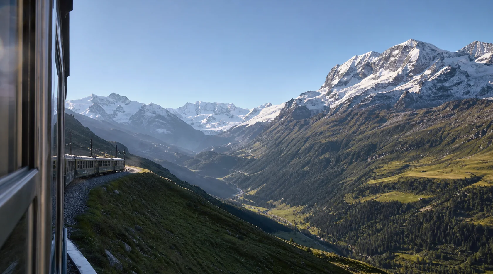
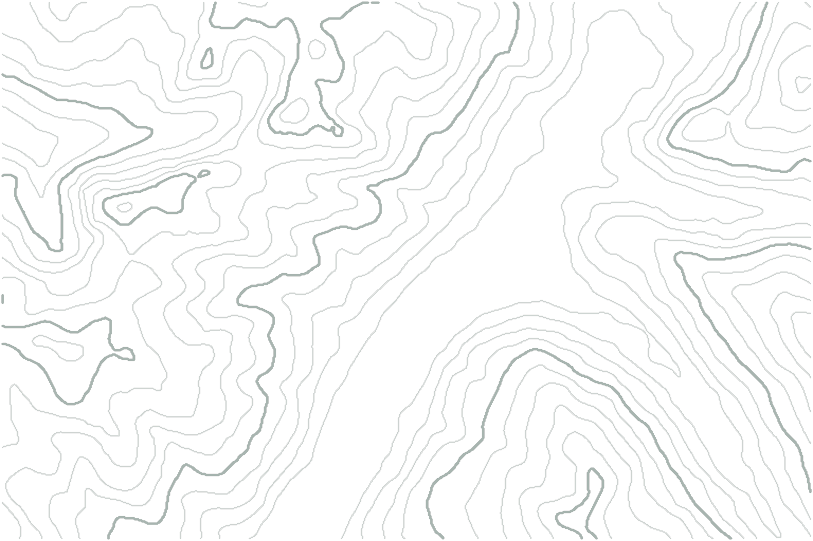
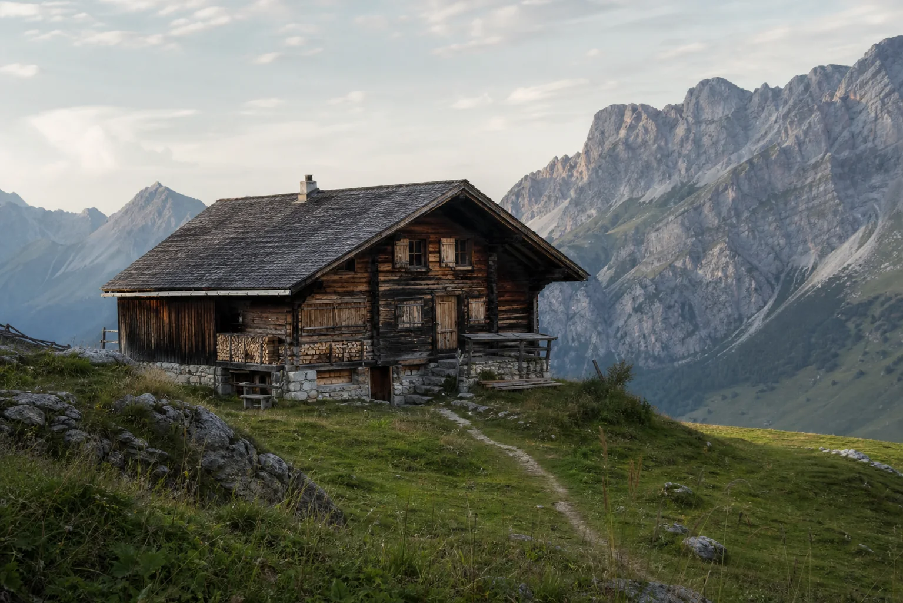

1
Branding & Website
Alpen Express
スイスの鉄道旅を、もっと特別に。休暇をつなぐブランドサイト。
Case study soon ·アルプスの草原 / Alpine meadow
Stories shaped by snowlight, green slopes, and warm wind.
また、風の中で会いましょう。
01 / Philosophy
Crafting beauty, designing a kinder tomorrow.
02 / Selected works
Three trails, many small stories.


Branding & Website
スイスの鉄道旅を、もっと特別に。休暇をつなぐブランドサイト。
Case study soon ·Identity & Illustration
山小屋の温もりを、やさしいイラストと静かな色で伝える。
Case study soon ·
Web App
自然の記憶を、そっと記録する山の日記アプリ。
Case study soon ·